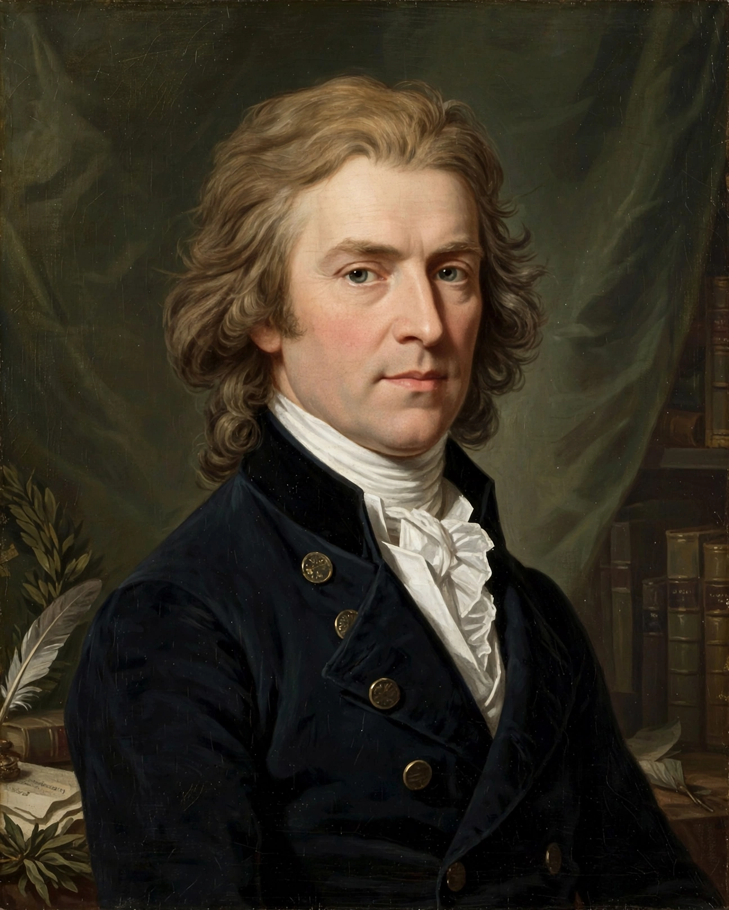

Friedrich Schiller
From Wikipedia, the free encyclopedia

Johann Christoph Friedrich von Schiller (10 November 1759 – 9 May 1805) was a German playwright, poet, philosopher and historian, a central figure of Weimar Classicism alongside his friend Johann Wolfgang von Goethe. His plays — The Robbers (1781), Don Carlos, Wallenstein, Mary Stuart, William Tell — and poems, including the 'Ode to Joy' set by Beethoven in the Ninth Symphony, made him Germany's national dramatist and a European symbol of freedom against tyranny.
Life
A regimental doctor's son educated willy-nilly at the Duke of Württemberg's military academy, Schiller fled to Mannheim after The Robbers' sensational premiere made him famous and unemployable at home. A decade of poverty, journalism and tutoring preceded the Jena history chair (1789) and the move to Weimar (1799), where his intense late friendship with Goethe — the 'Weimar diarchy' — produced the ballads of 1797, the Xenien satires and his great final dramas in five years.
Work and thought
Schiller's aesthetic theory (On the Aesthetic Education of Man, 1795) proposed beauty as the path from sensuous to moral freedom — a philosophy forged against the French Revolution's descent into terror. His histories (of the Dutch Revolt and the Thirty Years' War) fed the dramas that school generations across Europe memorised: Tell's apple-shot, Joan of Arc's banners, the Marquis Posa's plea 'Sire, give freedom of thought'.
Death and legacy
Chronic illness (probably tuberculosis worsened by his years of poverty) killed him at 45. The nineteenth century canonised Schiller as freedom's poet — his 1859 centenary was celebrated from Berlin to Cincinnati — and the 'Ode to Joy' became, in Beethoven's setting, the anthem of the European Union.